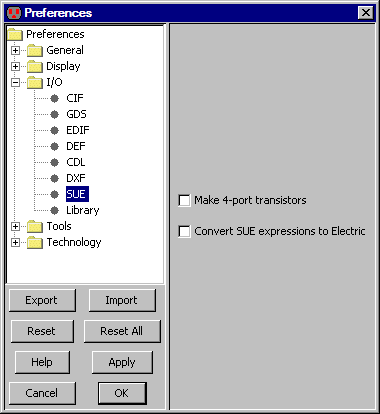

<!-- NEED 4in -->

<!-- HEADER 7-3-8: SUE Control -->

<!-- COMMAND File/Import/SUE (Schematic User Environment)... -->
<!-- PREFERENCE I/O/SUE -->

<TABLE><TR><TD>
SUE (Schematic User Environment) is the database format of the SUE schematic editor,
from <A HREF="http://www.micromagic.com">Micro Magic</A>.
SUE options are controlled with the SUE Preferences
(in menu <B>File / Preferences...</B>, "I/O" section, "SUE" tab).
<P>
This dialog controls whether transistors will appears in a standard 3-terminal
configuration or in a 4-port configuration with a substrate connection.
</TD><TD><CENTER></CENTER></TD></TR></TABLE>

<!-- TRAILER -->
